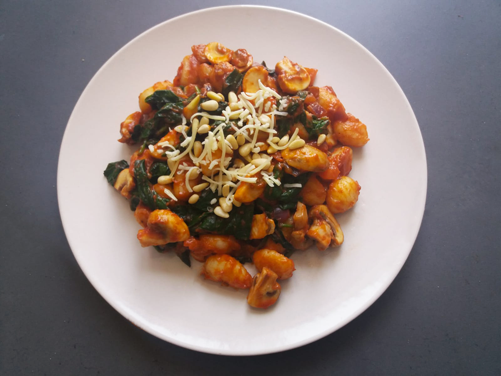

avocado salade

amerikaanse caesar salade

italiaanse caponata

bami met spinazie

albanese byrek met spinazie

groene smoothie

japanse beef teriyaki

koreaanse bibimbap

coq au vin

gnocchi

Bereidingsduur: 25 minuten
Aantal personen: 3
Ingrediënten:
500 gram gnocchi
2 tomaten
250 gram spinazie
1 rode ui
250 gram champignons
2 teentjes knoflook
140 gram tomatenpuree
2,5 eetlepels pesto arrabbiata
3 handjes geraspte kaas
3 handjes pijnboompitten
naar smaak peper
500 gram gnocchi
2 tomaten
250 gram spinazie
1 rode ui
250 gram champignons
2 teentjes knoflook
140 gram tomatenpuree
2,5 eetlepels pesto arrabbiata
3 handjes geraspte kaas
3 handjes pijnboompitten
naar smaak peper
Instructies:
1. Verhit olie in een pan en laat de spinazie slinken. Snijd ondertussen de ui, tomaten en champignons in kleine stukken.
2. Maak de gnocchi klaar volgens de aanwijzingen op de verpakking. Haal de spinazie uit de pan en pers de knoflook in de pan. Voeg nu ook de ui, champignons en tomaten toe en bak een paar minuten.
3. Voeg de spinazie, tomatenpuree en pesto arrabbiata toe aan de pan en roer goed door. Als de gnocchi klaar is mag deze ook worden toegevoegd aan de pan. Even goed roeren en een paar minuten bakken.
4. Verdeel de geraspte kaas en pijnboompitten over het gerecht en klaar!
1. Verhit olie in een pan en laat de spinazie slinken. Snijd ondertussen de ui, tomaten en champignons in kleine stukken.
2. Maak de gnocchi klaar volgens de aanwijzingen op de verpakking. Haal de spinazie uit de pan en pers de knoflook in de pan. Voeg nu ook de ui, champignons en tomaten toe en bak een paar minuten.
3. Voeg de spinazie, tomatenpuree en pesto arrabbiata toe aan de pan en roer goed door. Als de gnocchi klaar is mag deze ook worden toegevoegd aan de pan. Even goed roeren en een paar minuten bakken.
4. Verdeel de geraspte kaas en pijnboompitten over het gerecht en klaar!